Kevin Schmidt, W9CF
I give an animated plot of the radio frequency current and magnetic field in a conductor. For completeness, I include the derivation of the result, however similar descriptions can be found in most electromagnetism texts.
| x 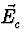 | = | 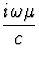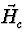 | |
| x | = | 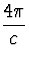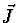 - 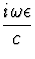 | (1) |
| x | = | 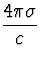 - | (2) |
| x ( x ) = 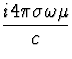 | (3) |
| x ( x ) = ( ) - 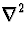 = - | (4) |
| + = 0 . | (5) |
| = 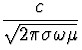 | (6) |
| + 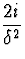 = 0 . | (7) |
| + = 0 . | (8) |
Outside the conductors, the same calculation shows that the fields
satisfy the wave equations
| 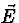 + 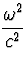 = 0 | |||
| 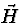 + = 0 | . | (9) |
The skin depth in copper is about .005 centimeters for the 160 meter band, .002 centimeters for the 20 meter band, .001 centimeters for the 6 meter band, and .0003 centimers for the 70 centimeter band. It is easy to see that the spatial variation of the fields in vacuum is much smaller than the spatial variation in the metal. Therefore, for the purposes of evaluating the fields in the conductor, the spatial variation from the wave length outside the conductor can be ignored.
The main effect on the form of the fields inside the conductor is governed by the shape of the conductor. For the usual case where the surface of the conductor is flat on the length scale of the skin depth, and the conductor is much thicker than the skin depth, the solution is straightforward. Note that flat on the length scale of the skin depth means that the radii of curvature of the surface should be much larger than a skin depth. Since the external fields are changing on the scale of either the curvature of the conductor or the wave length, and the tangential components of and must be continous across the boundary (this is normally shown by applying Stokes theorem to Maxwell's curl equations above) the tangential components inside also change tangentially in the same way. Similarly the normal component of 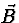 is continuous, so the normal component of is continuous. The result is that the tangential dependence of the magnetic field just inside the material is identical to the dependence outside. The second derivatives in the tangential direction will be of order one over the length scale squared. Since the length scales outside are so much larger than those inside, these second derivatives cannot give a contribution anywhere near the value of 2i/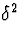 needed to solve Maxwell's equations inside. To an excellent approximation, the dependence of the fields normal to the surface must give this entire contribution and
| 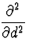 + = 0 | (10) |
| = 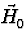e (i - 1)d/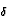 | (11) |
If we take the divergence of the curl of Maxwell equation,
we get the divergence of is zero. Taking the divergence of
this, the largest terms are from the normal component. Again, since the
skin depth is so much smaller than the other length scales, the only way
to obtain a zero divergence result is to have a negligible component of
normal to the surface. Plugging back in to Maxwell's equations,
the magnetic and electric fields in the conductor are
| = | 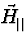e (i - 1)d/ | ||
| = | - 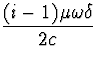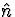 x e (i - 1)d/ | (12) |
Notice that the skin depth being so small dominates Eq. 10, so for conductors many skin depths thick, you will always get this exponential decay as you move away from the surface. In particular you will still get this behavior even for surfaces with large radii of curvature once you are many skin depths from the surface.
The current density is given by Ohm's law = 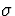 , or
| = - 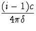 x e (i - 1)d/ . | (13) |
Plots of the magnetic field and the current density are shown in figure 1. It is amusing to see that the current is not all flowing in the same direction in the conductor. From the figure, we see that there is a wave traveling and decaying into the conductor. When the current density is a maximum at the surface, the current deeper than about 1.5 skin depths is flowing in the opposite direction. The magnetic and electric fields have the same behavior.
To verify the usual results, integrate the current density to get the equivalent surface current,
| 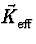 = 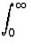dd = 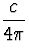 x | (14) |
| p = Re dd 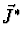 = 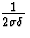||2 . | (15) |